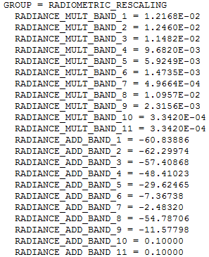
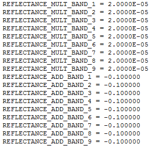

When a solar energy strikes any object, following type of intereactions are possible:
Transmitted: The energy passes through the object, undergoing a change in velocity determined by the index of refraction of the two media involved.
Absorbed: The energy is absorbed by the object through electron or molecular reactions.
Reflected: The energy is returned unchanged, with the angle of incidence equal to the angle of reflection. Reflectance is the ratio of reflected energy to the incident energy on the object. The wavelengths that are reflected (and not absorbed) determine the color of the object.
Scattered: The direction of energy propagation is randomly altered. The two most significant types of scattering in the atmosphere are Rayleigh scattering and Mie scattering.
Emitted: The energy is first absorbed by the object and then re-emitted, typically at longer wavelengths. This process often results in the object heating up.
Radiance refers to the flux of energy (primarily irradiant or incident energy) per solid angle leaving a unit surface area in a given direction. Radiance corresponds to brightness in a given direction toward the sensor, and is often confused with reflectance, which is the ratio of reflected versus total power energy. Radiance is what is measured at the sensor and is somewhat dependent on reflectance.
Satellites are designed to collect data across various bands or channels of reflected energy and one channel of emitted energy. A well-calibrated satellite converts the raw solar energy collected by the sensor into absolute units of radiance. Radiance, the flux of energy per solid angle leaving a unit surface area in a given direction, corresponds to brightness and is measured by the sensor. It is different from reflectance, which is the ratio of reflected to total incident energy.
Different bands of data help discriminate between Earth surface materials by developing spectral signatures. For any material, emitted and reflected radiation varies by wavelength, creating a unique reflectance fingerprint. Similar objects or classes have similar interactive properties with electromagnetic radiation at given wavelengths, while different objects have distinct properties. A plot of these interactions—scattering, emittance, reflectance, and absorption—across wavelengths forms a spectral signature, diagnostic of the object or class. This signature is defined as reflectance as a function of wavelength. Four such signatures are illustrated in following figure:
Spatial resolution is the ability of a sensor to distinguish small details on the Earth's surface. It depends on the detector size, focal length, and sensor altitude. Two commonly used terms to describe spatial resolution are ground sample distance (GSD) and instantaneous field of view (IFOV).
Ground Sample Distance (GSD): The distance between the centers of two adjacent ground pixels.
Instantaneous Field of View (IFOV): The area on the ground covered by the sensor's field of view for a single detector, often referred to as pixel size.
A standard Worldwide Reference System (WRS) scene typically covers a land area of approximately X kilometers (across-track) by Y kilometers (along-track).
Temporal Characteristics
Temporal characteristics in remote sensing refer to the frequency and timing of data acquisition by satellites, which are crucial for monitoring changes on the Earth's surface over time. These characteristics are influenced by several factors including orbit times, sun elevation effects, and revisit opportunities.
Orbit Times: Orbit time refers to the period it takes for a satellite to complete one full orbit around the Earth. This time varies depending on the satellite's altitude and orbital path. Satellites in low Earth orbit (LEO) typically have shorter orbit times, often completing an orbit in about 90-100 minutes. Geostationary satellites, on the other hand, have much longer orbit times as they are positioned much farther from the Earth.
Satellites in sun-synchronous orbits maintain a nearly constant geometric relationship between their descending (southbound) tracks and the sun's mean projection onto the equatorial plane throughout their missions. This orbit type ensures that the mean solar time at each point along the satellite's orbit remains fixed, meaning all points at a given latitude on descending passes will have the same mean solar time.
However, a fixed mean solar time does not imply that the local clock time remains constant at all points at a given latitude, as local time is determined by discrete time zones worldwide. The local time the satellite crosses a specific point at latitudes other than the Equator varies due to the time required for a complete orbit (approximately 99 minutes) and the different time zones crossed by the satellite relative to its equatorial crossing point.
Sun Elevation Effects: Sun elevation, or the angle of the sun above the horizon, significantly affects the quality and characteristics of the data collected. When the sun is low in the sky, shadows are longer, which can enhance the visibility of certain features but may also introduce distortions. Conversely, a high sun elevation minimizes shadows, providing a more even illumination but potentially reducing the contrast of certain features. The time of day and the season affect the sun elevation, thus influencing the temporal characteristics of the data collected.
Revisit Opportunities: Revisit time is the frequency with which a satellite passes over the same location on Earth. This interval is crucial for applications that require regular monitoring, such as agriculture, forestry, and disaster management. Shorter revisit times allow for more frequent observations, making it easier to detect changes and trends. Satellites in polar or sun-synchronous orbits often have shorter revisit times, especially when multiple satellites in a constellation work together to cover the same area.
TOA Radiance and Reflectance
Complete content of this page is taken from reference page. Will be updating it later. I am glad to find the page
Satellite image processing involves converting raw sensor data into meaningful physical quantities. This process includes several steps:
calculating Top of Atmosphere (TOA) radiance and reflectance,
Sensor calibration
quantization
Understanding these steps is crucial for interpreting satellite images accurately.
Sensor calibration typically establishes a linear (or nearly linear) relationship between the radiance received by the sensor and the resulting voltage generated by its detecting elements. By recording the voltage produced by each detecting element, along with the corresponding location on Earth's surface from which the radiation originated, we can arrange these voltages into a spatial pattern based on their geographic locations. This process creates a map-like image where each pixel value represents the measured voltage from that specific area. Essentially, this is how satellite images are formed.
Top-of-atmosphere reflectance (or TOA reflectance) is the reflectance measured by a space-based sensor flying higher than the earth's atmosphere. These reflectance values will include contributions from clouds and atmospheric aerosols and gases.
Calculations of TOA Radiance and Reflectance
Quantization : Conversion to Digital Numbers (DN): The raw voltages measured by satellite sensors are not stored directly due to memory constraints and precision requirements. Instead, these voltages are quantized into Digital Numbers (DNs). Quantization reduces the required memory while maintaining adequate precision.
Example: For example, consider measuring human height to the nearest centimeter, ranging from 54cm to 272cm. We need to store 219 distinct values, which can be done with 8 bits of memory (since \(2^8 = 256\)). Each height measurment is then encoded, e.g., 173cm becomes \(173-54 = 119\). THis encoded value (DN) can be stored as an integer, saving memory.
From Digital Numbers to TOA Radiance: When you open a satellite image in a software package, the initial value you see in each pixel is called a Digital Number (DN), which is equivalent to the code ('119') in the example above. While the DNs are sufficient to produce a nice visualization of the image, if you want to treat the image as a series of radiometric measurements you need to convert it into a physical quantity (like the 173cm that was the height of the person measured in that example). In remote sensing, the translation of a Digital Number value into a radiance measurement is really a two-step process.
Conversion to Voltage: The DN is first converted back to the corresponding voltage
Conversion to Radiance: The voltage is then converted to radiance using the sensor's calibration parameters.
In passive optical remote sensing, the calibration of the sensor has resulted in a known relationship between the radiance that the sensor is exposed to, and the voltage generated by the radiation, and quantization has then been used to encode the measure voltage as a Digital Number. To convert this Digital Number (DN) to radiance thus in theory requires first a conversion to voltage and then a conversion to radiance. Luckily it is easy to do these two conversions at the same time. We will look at how this is done for Landsat data as an example, but the same principle is relevant to data from all other passive optical satellite sensors.
Example: For example, Landsat data involves converting DNs directly to radiance using a linear relationship derived from the sensor's calibration. Landsat metadata contain radiometric calibration coefficients (as shown below) that allow you to directly convert DN values to Top-of-Atmosphere (TOA) radiance. The coefficients contain a ‘multiplication’ term and an ‘addition’ term, each of which is unique to each band, and they are used like this: \(L_\lambda = \text{mul}_\lambda \times \text{DN}_\lambda +\text{add}_\lambda \), where \(L\) is the radiance and \(\lambda\), the common notation for wavelength, indicates a given band.

Reference:Calibration coefficients used to convert DN values to TOA radiance values for Landsat 8. By Anders Knudby, CC BY 4.0.
In order to produce a raster data layer in which each cell value is a measure of TOA radiance, you can therefore use the 'Raster Calculator' available in all GIS / remote sensing software, and some software packages even have dedicated 'Landsat radiometric calibration' tools that find the relevant information in the metadata and apply it for you.
Digital Numbers to TOA Reflectance: Converting DN values to a measure of radiance is an important step toward using remote sensing data in a quantitative way – in which the values in each cell have an actual physical meaning. However, there is one principal problem with radiance measurements: The radiance coming from an area depends both on the physical characteristics of that area, such as what is on the surface, but it also depends on the amount of radiation incident on that area. It is easy to confirm this with a single experiment: Move to a light switch near you, make sure it is on, and focus your gaze on a wall. Note how bright it is (a rough human approximation of the amount of radiance coming from it). Now turn off the light, and note whether the wall got darker or lighter. It got darker, of course, which means that there is now less radiance coming from it. And this happens although the wall itself did not change at all! In the remote sensing context, radiance measurements are therefore rarely used directly, but are typically used as a step toward a radiometric quantity that is more closely linked to the surface it is coming from: reflectance. For isotropic radiation, the reflectance (R) of a given area is the ratio of outgoing vs. incoming radiance, also often expressed on the basis of exitance (E) and irradiance (I):
$$R = \frac{L_\text{up}}{L_\text{down}} = \frac{E_\text{up}}{I_\text{down}}.$$
In the wall example, when you turn off the light both the incoming and the outgoing radiance is reduced, and the reflectance of the wall is unchanged. That’s because the reflectance is a physical property of the wall that is independent of illumination. This makes it uniquely suitable for use in remote sensing, because multiple observations with varying illumination can be compared, for uses such as tracking change of an area through time, or for comparing different areas on Earth.
If we convert TOA radiance values to reflectance values, we get what’s called TOA reflectance, which is the reflectance of the entire Earth-Atmosphere system. To think about what that means, imagine that you are an astronaut and you put a hula-hoop ring horizontally right at the level of the top of the atmosphere (if the top of the atmosphere were possible to define and find!), and you then measure the amount of radiation passing through the ring in upward and downward directions. Dividing one by the other gives you TOA reflectance.
Calculating TOA reflectance is done a bit differently for different data types. For Landsat 8, there is another set of calibration coefficients that you can apply exactly like you can apply those for TOA radiance (shown below)

Reference:Calibration coefficients used to convert DN values to TOA reflectance values for Landsat 8. Note that values for bands 10 and 11 are not provided, because these bands do not measure reflected solar radiation (except to a negligible degree). Also note that coefficients are the same for all bands – for Landsat 8 the DN values have been specifically generated for each scene to ensure constant TOA reflectance calibration coefficients. By Anders Knudby, CC BY 4.0.
For older Landsat data, as well as for several other types of sensors, it is necessary to explicitly calculate the amount of incoming solar radiation at the top of the atmosphere, and divide the radiance by this value while correcting for the difference between radiance and irradiance and the angle of incoming solar radiation. This is done generically with the following equation:
where \(R_\text{TOA}\) is the top-of-atmosphere reflectance, \(L\) is (upward) radiance, \(d\) is the Earth-Sun distance in astronomical units, \(I_{\text{Sun}}\) is the mean extraterrestrial solar irradiance, and \(\theta_\text{Sun}\) is the solar zenith angle – the angle between the direction toward the Sun and the normal of the Earth’s surface. The equation is a division between the outgoing radiation in all upward directions (i.e. the exitance, in the numerator) and the incoming radiation in all downward directions (i.e. the irradiance, in the denominator).
The numerator is relatively simple: the upward radiance, L, which is quantified as the radiation per exposed unit surface area moving in directions within a specified solid angle, is multiplied by π to convert it to a value that quantifies radiation moving in all upward directions instead, to make it comparable to the incoming solar irradiance in the denominator.
In the denominator, we have \(I_{\text{Sun}}\), the average solar irradiance at the top of the atmosphere. Because the distance between the Sun and the Earth varies throughout the year and the amount of solar irradiance varies with it, we need to correct this by the factor \( 1/d^2\), where \(d\) is the acctual distance betweeen the Sun and the Earth when the image was acquired. If the Sun were at Zenith (directly overhead), this would quantify the incoming irradiance per unit surface area. In cases when the Sun is not at zenith, we must multiply this value by the cosine of the solar zenith angle to arrive at the irradiance per exposed unit surface area.
With these calculations, you are able to convert the DN values in each pixel to a measure of TOA reflectance, which is a physical property of the Earth-Atmosphere system. This fact, that TOA reflectance is not an arbitrary number dependent on sensor calibration and illumination, but rather a physical property of the parts of the Earth seen in the image, allows us to use images captured by different sensors, at different times, and for different areas, and directly compare the values in each pixel. The one remaining problem in this approach is that most researchers are more interested in the reflectance of the Earth’s surface than in the reflectance at the top of the atmosphere, but the state of the atmosphere and the state of the surface both influence TOA reflectance. The next step to further process the data from each pixel is thus to remove the influence that the atmosphere has on these values, to arrive at a measure of surface reflectance!